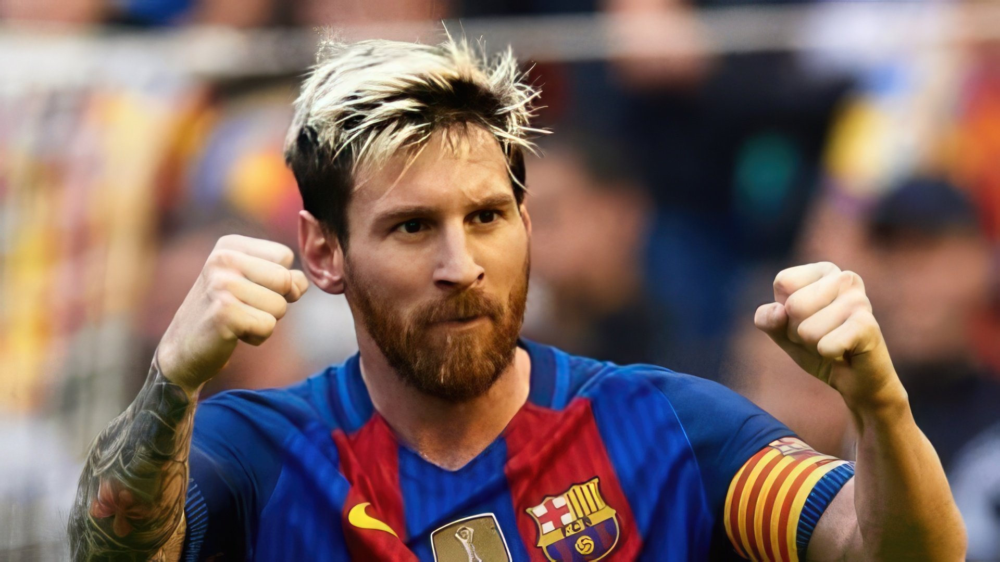

Ліонель Мессі
Ліоне́ль Андре́с Ме́ссі Куччитті́ні (ісп. Lionel Andrés Messi Cuccittini; нар. 24 червня 1987 року, Росаріо, Аргентина) — аргентинський футболіст, плеймейкер, нападник клубу Інтер (Маямі). Рекордсмен за кількістю забитих м'ячів у складі збірної Аргентини та «Барселони». Чемпіон світу 2022 року. Віце-чемпіон світу 2014 року. Семиразовий володар призу «Золотий м'яч» (1-й показник), зокрема: 2009, 2019 та 2021 роки за версією France Football, 2010, 2011, 2012[3], 2015 роки за версією об'єднаного трофея від France Football та ФІФА. Семиразовий володар титулу найкращий футболіст світу за версією ФІФА, зокрема: 2009, 2010, 2011, 2012, 2015, 2019, 2022 роки. Шестиразовий володар Золотого бутса УЄФА (1-й показник) (2010, 2012, 2013, 2017, 2018, 2019). Другий футболіст світу 2007, 2008, 2013, 2014, 2016 та 2017 років. Мессі деколи називають «новим Марадоною»[4][5] за його технічну гру та високу результативність. Один з найобдарованіших і найталановитіших атакувальних півзахисників сучасності[6]. У 2012 журнал «Time» вніс його до списку «100 найвпливовіших осіб світу»[7].